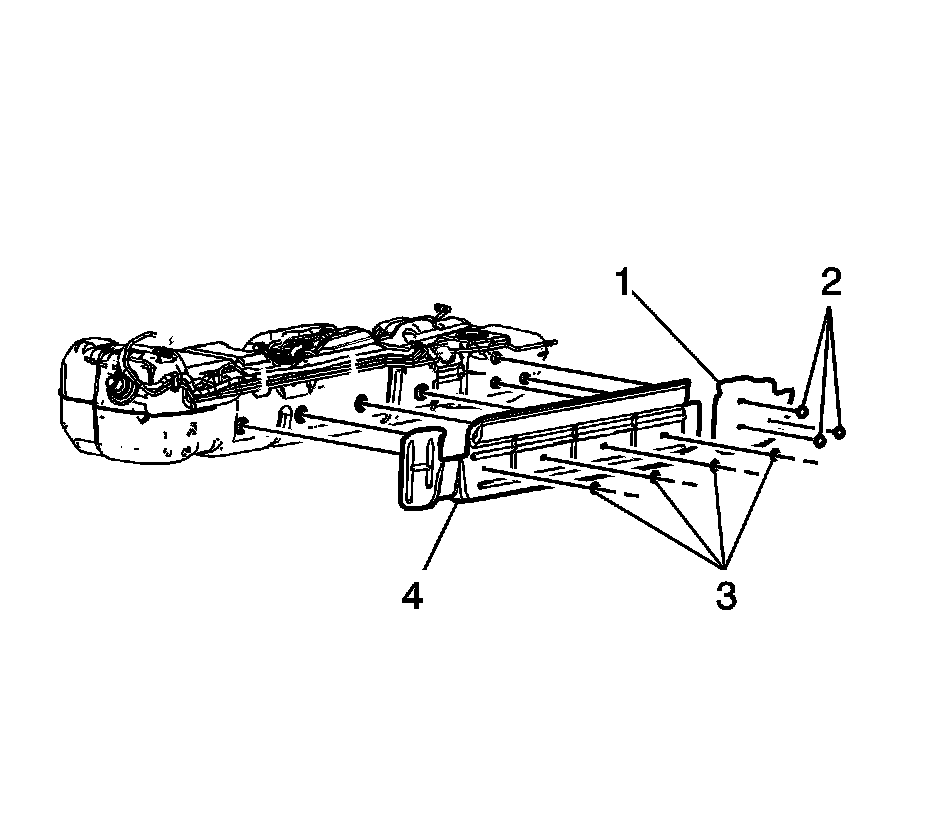
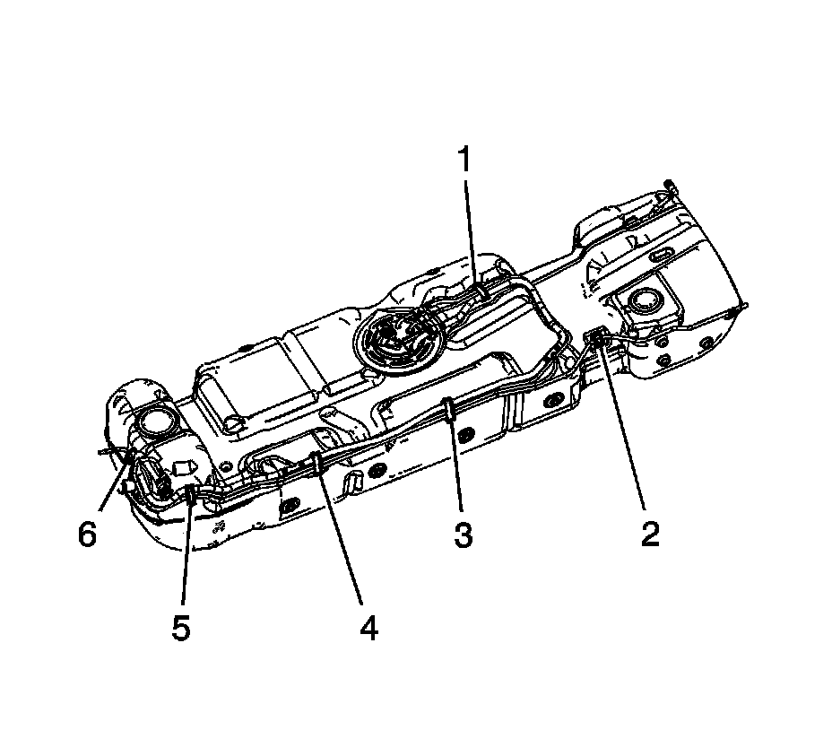
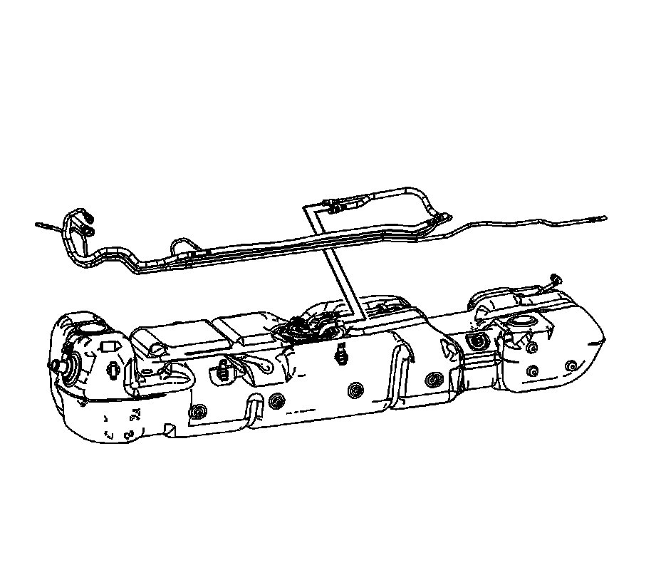

Evaporative Emission (EVAP) Hoses/Pipes Replacement - Canister/Fuel Tank (1500 LWB - 117.3L (31 Gal) Tank)
EVAPORATIVE EMISSION HOSES/PIPES REPLACEMENT - CANISTER/FUEL TANK (1500 LWB - 117.3L (31 GAL) TANK)
REMOVAL PROCEDURE
IMPORTANT: Clean the evaporative emission (EVAP) line connections and surrounding areas prior to disconnecting the fittings in order to avoid possible EVAP system contamination.

1. Remove the fuel tank.
2. Remove the fuel tank shield retainers (2, and 3) and shields (1, and 4).

3. Remove the EVAP line from the fuel tank clips (2, and 6).
4. Open the fuel tank clips (1, 3, 4, and 5) and remove the EVAP lines from the clips.
5. Disconnect the EVAP line quick connect fittings at the fuel tank module and vent valve.

6. Remove the EVAP lines from the fuel tank.
INSTALLATION PROCEDURE
1. Install the EVAP lines to the fuel tank.
2. Connect the EVAP line quick connect fittings at the fuel tank module and vent valve.
3. Install the EVAP lines to the fuel tank clips (1, 3, 4, and 5) and close the clips.
4. Install the EVAP line to the fuel tank clips (2, and 6).
5. Install the fuel tank shields (1, and 4) and retainers (2, and 3).
6. Install the fuel tank.